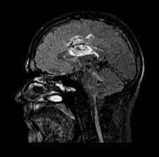
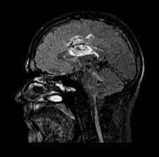

Overrasket forskerne: KI oppdaget 20 prosent flere krefttilfeller
Forskere er positivt overrasket over hvor mange krefttilfeller kunstig intelligens (KI) fant. Det betyr at svulsten kan fjernes tidligere.

Brystkreft er den vanligste kreftformen hos kvinner. De fleste tilfeller kan behandles, men likevel dør 600 nordmenn hvert år. Som ved all type kreft, er det viktig å oppdage svulsten tidlig. Det øker sjansen for at det går bra. Svenske forskere ved Lunds Universitet har testet bruk av kunstig intelligens i undersøkelsene på en gruppe bestående av 80.000 kvinner.

– Resultatet er oppsiktsvekkende bra. Jeg hadde ikke trodd vi skulle oppdage så mange flere tilfeller, og i så fall at det skulle vært flere falsk positive, sier overlege og forsker Kristina Lång til NRK.
80.000 kvinner
Når en kvinne har tatt mammografi, blir bildene gått gjennom av to leger. På den måten oppdages rundt 60 prosent av alle brystkrefttilfeller. Den ferske undersøkelsen viser at KI-støttet mammografi kan finne 20 prosent flere tilfeller.
De ekstra tilfellene vi oppdaget var mindre svulster, noe som tyder på at det handlet om en tidlig fase av brystkreften, sier Lång. 80.033 kvinner ble tilfeldig fordelt i to grupper, hvor halvparten ble sjekket av to radiologer, mens den andre halvdelen fikk KI-støttet screening.
I den sistnevnte gruppa ble det funnet 20 prosent flere krefttilfeller. Bare tre var såkalt falske positive, noe som betyr at kreftmistanken forsvant etter ytterligere utredning.

 

Professor og avdelingssjef for forskning og innovasjon i Vestre Viken, Kristine Kleivi Sahlberg, er begeistret over de svenske resultatene.
– Dette er viktig og veldig spennende. Vi kommer til å se mer KI i helsesektoren framover og forsker mye på dette i Norge også, forteller Sahlberg til NRK.
Hun sier det blir interessant å se hva slags typer kreft KI oppdaget, som radiologene ikke så. Dette skal de svenske forskerne jobbe videre med de to neste åra.
– Hva slags type er det? Hvor stor er den? Har den spredd seg til lymfekjertlene? Når vi får disse svarene, får vi et mer fullstendig bilde av hva slags klinisk betydning KI kan ha for pasientene, sier Lång, som ikke kjenner til at det er gjort en liknende studie i verden.
– En ting er å oppdage kreft tidligere, men det er spesielt viktig å identifisere de aggressive og rasktvoksende krefttilfellene i tide, mener Sahlberg.
Sparer arbeid
I KI-støttet mammografi sammenliknes røntgenbildene med en database av tidligere bilder og identifiserer avvik. Ikke bare er forskerne fornøyd med kvaliteten på resultatene KI leverte, foreløpige analyser viser også at denne metoden kan minske arbeidsbyrden til radiologene med 44 prosent.
De 40.000 testene KI analyserte betyr rundt fem måneders innspart arbeid.
Overlege Lång understreker at KI ikke skal erstatte radiologene, men at det skal være et hjelpemiddel for et bedre resultat. Også i Norge er radiologkapasiteten sprengt.
– I dag er det alltid to erfarne radiologer som ser på mammografibildene. Hvis KI samt én radiolog er nok i framtida, vil det ha mye å si for kapasiteten på sykehusene, sier Sahlberg.

Bruken av VR-briller under oprasjon
Flere sykehus ønsker å redusere bruken av sterke bedøvende medisiner. Teknologi hentet fra gaming-verdenen har blitt en løsning for å få dette til.

Apple lanserer live-oversetting med airpods
Ny airpodsfunksjon "live-oversetter". Apple lanserte i september 2025 "Live Translation" for Airpods. Nå kan Airpods oversette samtaler med en funksjon kalt Liveoversetting.

Verdens viktigste selskap leverer tall
Er tek-oppgangen en boble? Mens Nvidia håver inn, svir kundene av penger. – Urovekkende, sier investeringsdirektør Robert Næss.